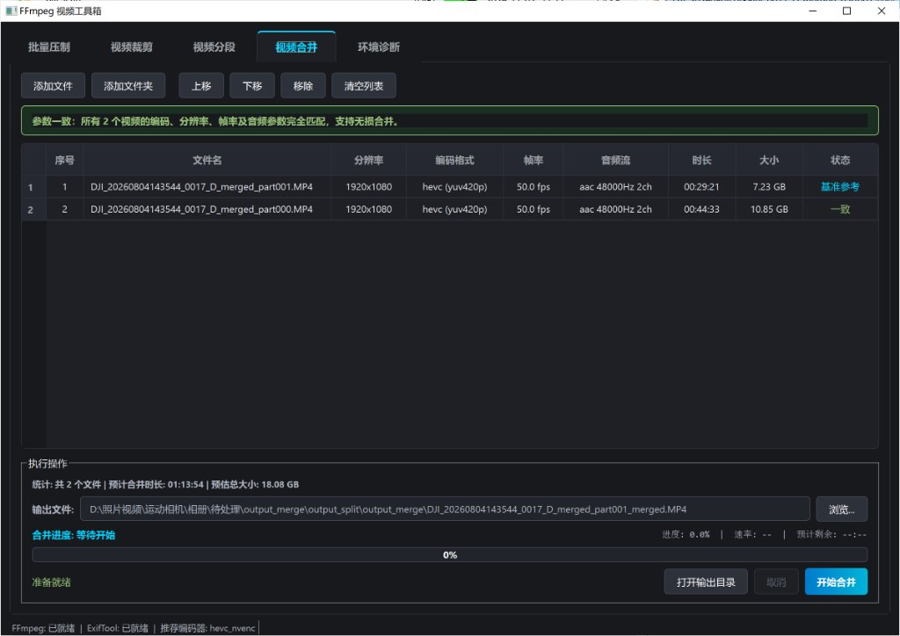
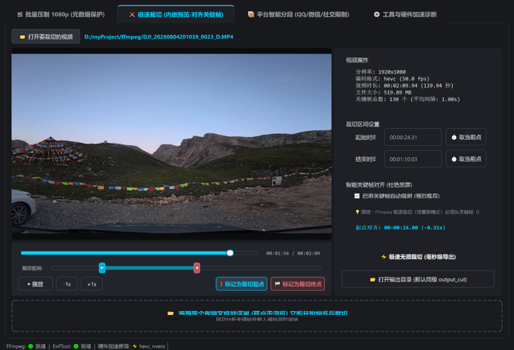
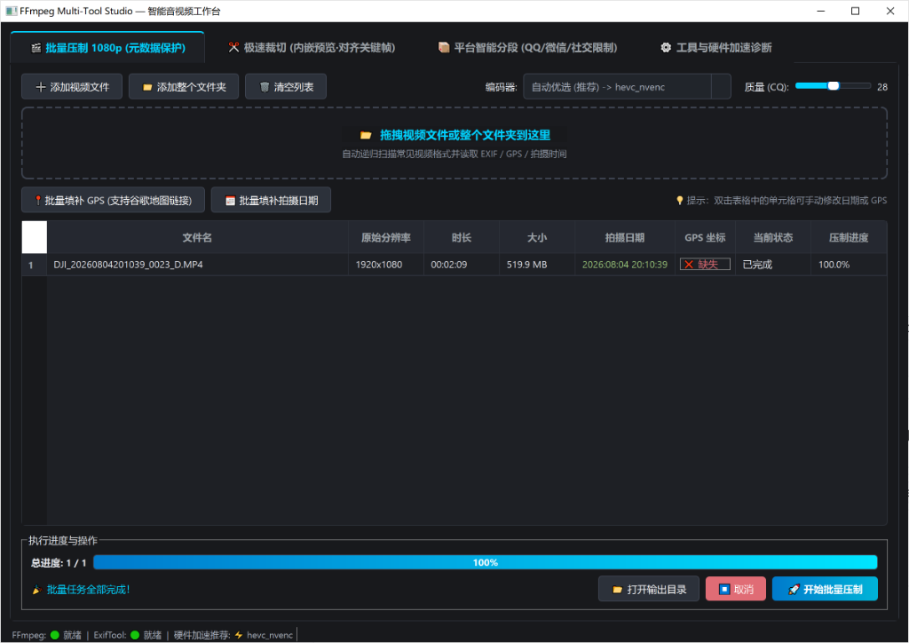

专为创作者打造的
高性能专业音视频桌面工具箱
基于 PySide6 (Qt) 与 FFmpeg 打造。告别繁琐命令行与臃肿软件，深度解决 4K/60fps 航拍与相机素材转码慢、微信QQ分发体积膨胀、裁剪黑屏及多段拼接的痛点。

视频合并与预裁剪管道
自动检测所有待合并视频的编码格式、分辨率、帧率与音频参数。当参数完全匹配时自动点亮绿色无损合规提示，支持免重编码秒级无损合并。
- 参数全自动校验：实时对比 HEVC/H.264、分辨率、帧率、音频采样率。
- 鼠标拖拽重排序：轻松上下拖动调整拼接先后次序。
- 独家单片预裁剪：合并前直接在弹窗内剪切区间，免手动导出中间件。

4K 智能压制 1080p & Exif 保全
针对大疆 4K/60fps、运动相机高码率大文件量身打造。内置精选压缩参数，画质肉眼无损，文件体积缩减 80% 以上，并完整保留原始拍摄元数据。
- 元数据全量回写：ExifTool 提取拍摄时间、相机型号与 GPS，相册时间线永不乱序。
- 独显自适应探测：启动自检 NVENC 硬件加速，并在异常时平滑回退至 CPU。
- 目录递归扫描：支持整文件夹拖拽，自动过滤无关文件。

关键帧吸附极速无损裁剪
采用 PyAV 高性能关键帧解析引擎。起止切点自动对齐到最近的 I 帧（关键帧），彻底杜绝免重编码剪辑的首段黑屏、马赛克花屏或音画不同步问题。
-
极速无损模式：直接
-c copy流拷贝，数秒内完成 GB 级别切分。 - 帧精确重编码模式：毫秒级精确定位，保证选区严格切分。
- 双滑块微调选择器：直观区间缩放，流畅拖拽与实时帧预览。
社交媒体智能分段与分发
专门针对国内社交平台的传输限制打造。内置 QQ (普通 1GB / VIP 2GB / SVIP 3GB) 与微信传输阈值规划算法。
- 智能切分规划：根据文件总大小与比特率，自动计算最优子段数量。
- 切点关键帧吸附：每个子段切片边界均对齐 I 帧，切出的所有片段随时可无损缝合。
- 免重编码秒级导出：批量快速切出子段，无需漫长等待。
为视频创作者量身打造的核心武器
从高码率航拍原片到社交平台无缝分发，一站式解决所有繁重转码与剪切需求。
批量压制 & Exif 元数据保全
专为 DJI 4K/60fps 及高码率素材优化的转码策略。深度集成 ExifTool 提取并回写原片拍摄时间、相机型号、镜头参数与 GPS 地理信息，相册时间线永不混乱。
关键帧吸附极速无损剪辑
内置 PyAV 关键帧解析引擎，选区自动对齐 I 帧（关键帧），杜绝切片黑屏、花屏或音画脱节。支持免重编码秒级输出以及毫秒级帧精确重编码模式。
社交平台智能分段
针对国内各大即时通讯软件发送体积门槛深度定制。输入单个超大视频，自动规划分段切分点与关键帧吸附，生成无缝衔接的免重编码切片，传文件不再受阻。
参数一致性体检与预裁剪合并
自动校验多段视频的编码、分辨率与音频参数并直观反馈。支持鼠标拖拽表格行排序，首创单视频预裁剪弹窗与 Concat Demuxer 自动拼合管道，免二次渲染。
极致性能背后的工程架构
拒绝启动卡顿与界面冻结，每一个毫秒都经过细致的分析与优化。
轻量启动骨架屏
基于原生轻量级组件直接绘制 Dark 主题卡片与动效，在 QApplication 启动瞬间立即弹出窗口，彻底消除用户双击桌面图标后数秒无反应的顿挫感。
按需懒加载与空闲预热
首屏仅加载首个选项卡组件，非关键选项卡通过 _step_preload_tabs 微队列在事件循环空闲时静默预加载，兼顾首屏极致性能与后续切换无缝感。
边界优化关键帧索引
针对视频起始点 0s 与结尾点进行边界短路判定，避免遍历几万个 Packet，关键帧解析弹窗耗时从 1.5 秒直接缩短到 0.02 毫秒。
为什么选择 FFmpeg Studio？
与传统格式转换工具、命令行及剪辑软件的深度对比。
| 核心能力对比 | FFmpeg Studio | 传统转码软件 (HandBrake/格式工厂) | 裸命令行 FFmpeg | 剪辑软件 (剪映/PR) |
|---|---|---|---|---|
| 启动速度 | < 80ms 瞬间秒开 | 2 ~ 5 秒 | 极快 (但无 GUI) | 5 ~ 15 秒缓慢加载 |
| 免安装即用 | 自带完整工具包解压即用 | 需要安装包向导 | 需手动配置 PATH | 安装包数 GB，侵入系统 |
| Exif 元数据保全 | 拍摄时间/GPS/相机全量回写 | 丢失拍摄时间与定位 | 需要手动编写复杂参数 | 重新编码直接丢失 |
| 关键帧吸附免重编码 | 自动对齐 I 帧杜绝黑屏 | 强制重新编码 | 需用 ffprobe 查询时间戳 | 必须重新渲染导出 |
| 多段预裁剪无损拼接 | 一键弹窗裁剪 + 自动无损拼合 | 繁琐，需多次存盘 | 需手动编写 concat 文件列表 | 需新建时间线并全量重编码 |
| 硬件加速自检 | 自动探测 NVENC 并持久化缓存 | 需手动选择编码器 | 需手动指定 nvenc 参数 | 部分版本需额外订阅/配置 |
下载与快速开始
支持 Windows 便携免安装版下载，亦可直接使用 Python 源码运行。
Windows 便携免安装版
-
1
下载
FFmpegStudio-v1.0.0-windows-x64.zip压缩包。 - 2 解压至任意全英文路径目录中。
-
3
直接双击
FFmpegStudio.exe即可秒开使用，无需配置任何环境变量！
从源码构建与运行
适合熟悉 Python 的开发者，或希望自行二次修改与二次开发的用户。
# 1. 克隆代码仓库
git clone https://github.com/cuicui-V5/ffmpeg-studio.git
cd ffmpeg-studio
# 2. 安装 Python 依赖
pip install -r requirements.txt
# 3. 运行主程序
python gui_main.py常见问题解答
传统剪辑软件导出时必须重新对每一帧进行压缩解码与编码，耗费大量 CPU/GPU 算力。FFmpeg Studio 智能提取视频关键帧位置，直接调用 FFmpeg 的流拷贝（Stream Copy / -c copy）模式，本质上是文件层面的数据流直接重组，因此数 GB 的素材可以在数秒内完成裁剪或拼接，画质 100% 原始无损。
其他转码工具生成的视频文件创建时间往往是「当前转码时间」，且丢失了相机原厂的 QuickTime/Exif 标签，导致手机相册乱序。FFmpeg Studio 深度集成了专业元数据引擎 ExifTool，在压制前后完整提取原片的拍摄时间戳、相机品牌型号、镜头参数与 GPS 地理坐标，并在转码完成后原样写回新文件，相册时间线与足迹地图完全保留。
完全不需要！直接下载 Releases 中的 FFmpegStudio-v1.0.0-windows-x64.zip 便携版，解压后双击即可运行。程序目录中已经完整内置了最新的 ffmpeg.exe、ffprobe.exe、ffplay.exe 以及 exiftool.exe，完全独立便携。
支持 NVIDIA 独立显卡的 NVENC 硬件加速编码器（hevc_nvenc / h264_nvenc）。软件启动时会自动探测硬件支持情况并缓存结果；如果当前设备没有独立显卡或驱动不支持，程序会自动平滑回退至高质量 CPU 编码（libx265 / libx264），保证在任何电脑上都能稳定运行。